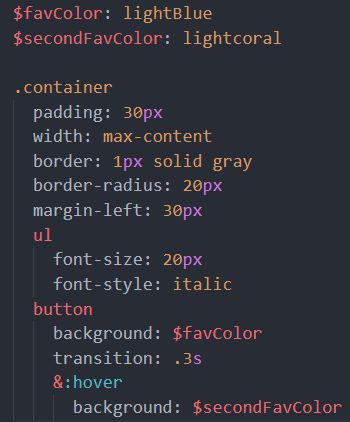
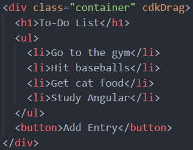

To-Do List
- Go to the gym
- Hit baseballs
- Get cat food
- Study Angular
(Feel free to drag and reposition the To-Do List, and both code snippets
below for easier viewing!)
What is Sass?
-
Syntactically awesome stylsheets is a CSS-preprocessor that reduces
clutter in your stylesheet
- Sass is basically SCSS without curly braces, and semi-colons
-
It is very simple to look at, but be careful of your indentation, as it
used for nesting, and matters greatly
-
To learn more, and run in your local project, please refer to the SCSS
section, as the steps are the same
.sass

.html
